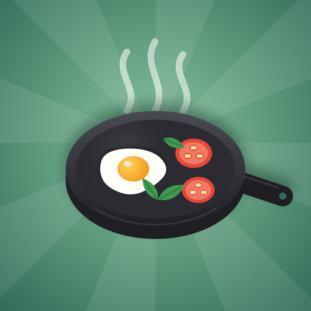

CookWithThat
Cook from only what you have
Cook from only what you have.
Tell CookWithThat what's in your fridge. Get recipe ideas that use only those items, plus the cupboard basics you say you keep, like salt, pepper and oil. No "just nip out for" ingredients.
- Type, paste or say what you have: "2 eggs, spinach, half an onion, cheddar"
- Up to five recipe ideas, quickest first, with time, equipment and the items each one uses
- Every recipe is checked against your list before you see it
- Filters for your equipment, your time, vegetarian, vegan or pescatarian, and the 14 major allergens
- Safe-cooking notes for meat, fish, eggs and rice
- Save recipes to your own iCloud, cook step by step with timers
- No account, no adverts, no tracking
Needs iPhone 15 Pro or later with Apple Intelligence switched on. Five ideas a day are free; CookWithThat Plus gives unlimited ideas.